AI 生成设计
梦屿 · Sleep Island
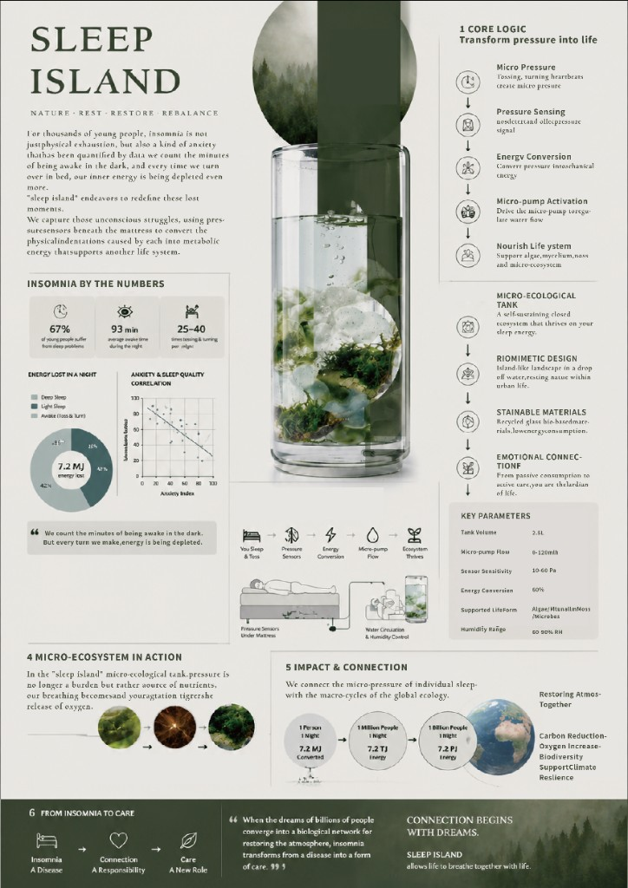
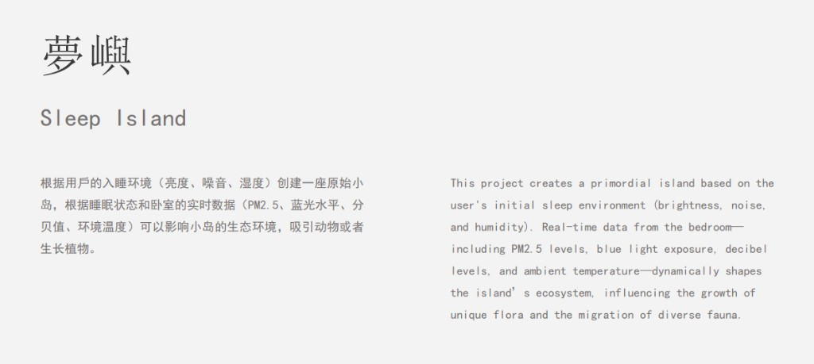
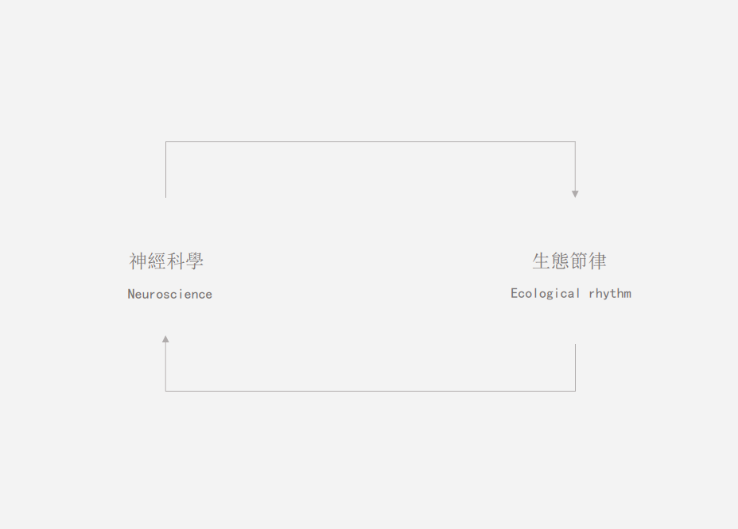
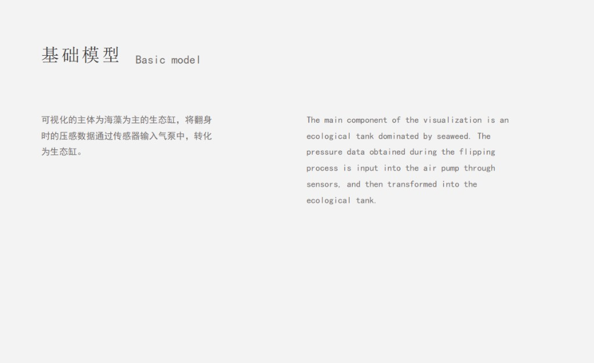
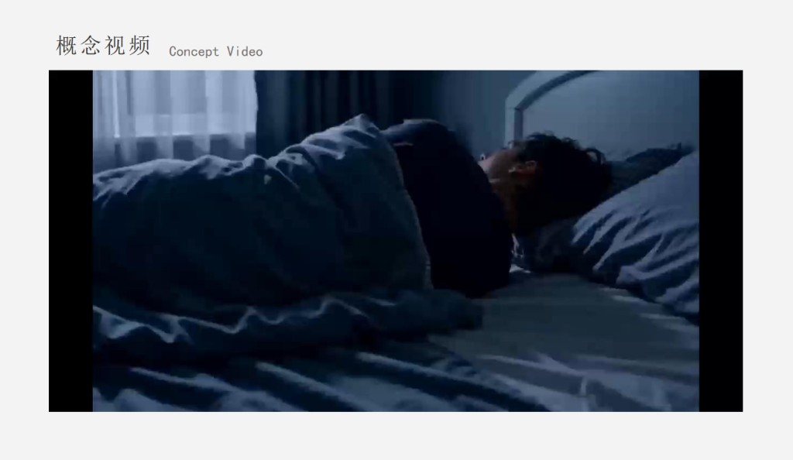
排版智能分析器
单页设计稿的智能版式辅助：网格、字体层级、行距与结构化报告。
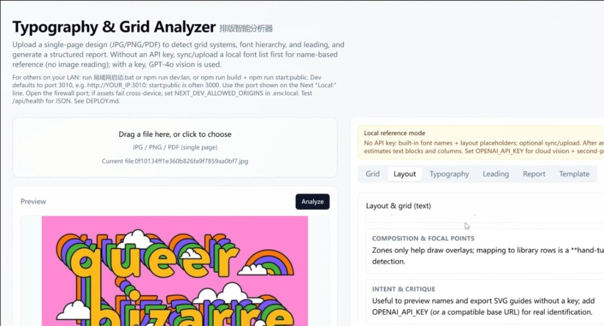
Hand gesture interaction game design
一款基于摄像头的手势交互小游戏：举手移动即可操控小鱼，躲避障碍、收集加分；页面会实时显示手势状态、帧率与得分等数据，便于观察交互反馈与运行流畅度。
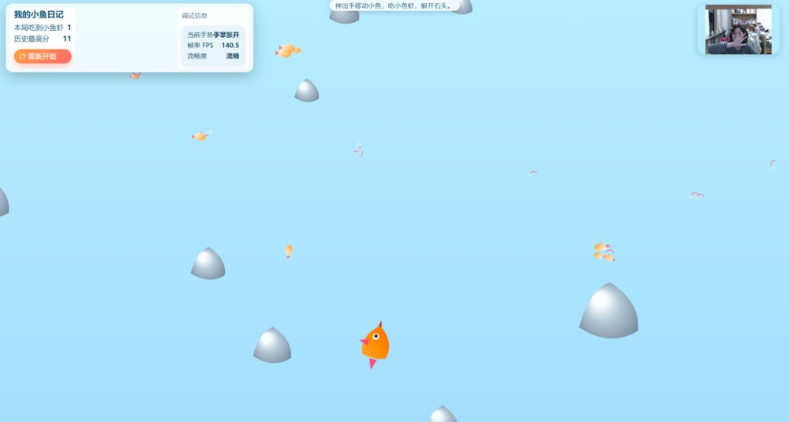
STYLE NEW STYLE
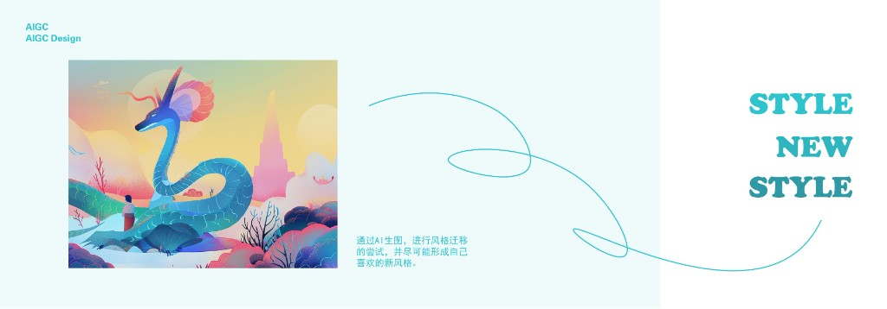
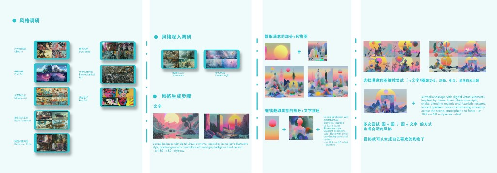
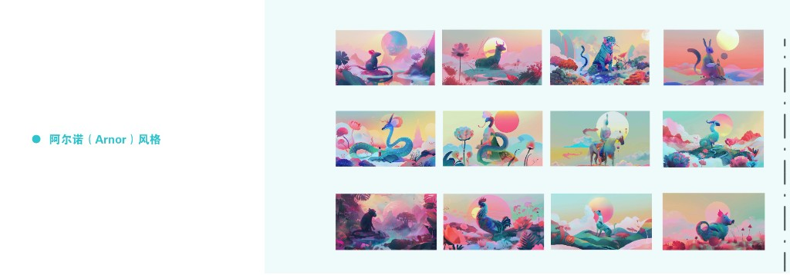
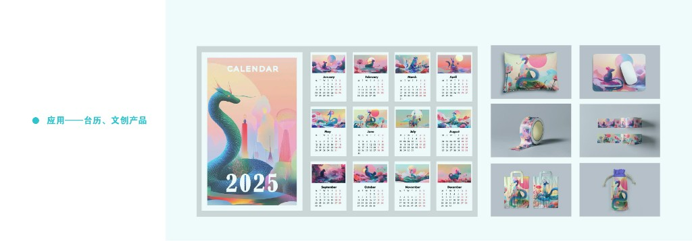